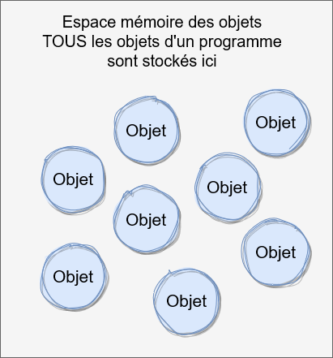
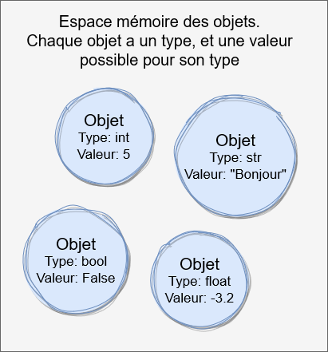
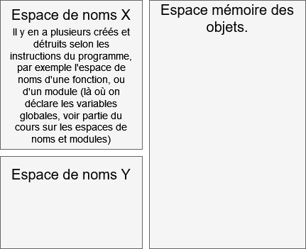
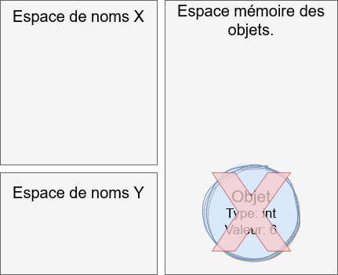
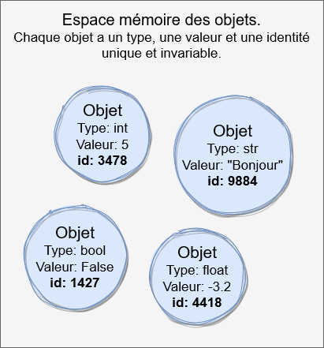
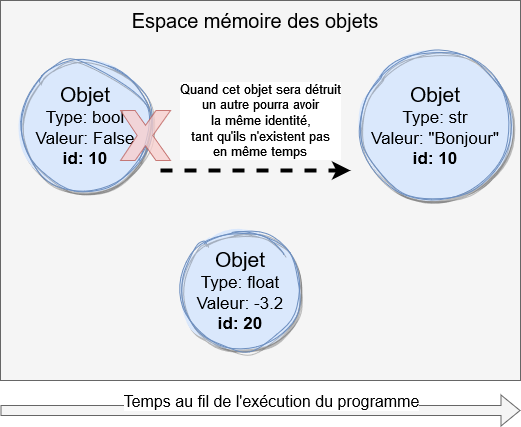

Mémoire et modèle de données
Creusons un peu plus dans les notions fondamentales en Python que sont les objets, les types de données et la mémoire de l'ordinateur.
Objets
Toute forme de donnée en Python est représentée par des objets, que ça soit les nombres, les chaînes de caractères, les listes, les tuples etc... Même les fonctions sont représentées sous forme d'objets.
Par exemple le int 5 est un objet, tout comme la str "bonjour", le bool
True ou la liste [3, 10, 8].
Les objets existent dans un espace mémoire qui leur est réservé.
Voici donc conceptuellement comment les données d'un programme en Python sont représentées
Le terme objet fait référence à la Programmation Orientée Objet (POO), qu’on appelle aussi Programmation Objet (PO), qui est une façon de représenter et manipuler les données dans un programme. On verra plus tard un peu plus en détail, pour l'instant retenons que cette approche a ses avantages et inconvénients, mais un avantage est qu’elle imite la façon d’un être humain de penser et conceptualiser les choses, et non pas comme une machine représente les données dans sa mémoire. Avec la programmation objets, la machine s’adapte à l’Homme, et pas l’inverse.
Un désavantage de l’approche objets est une abstraction plus élevée dans la manière de représenter les donnée dans un programme, ce qui demande un effort ce conception de la part du développeur plus important par rapport à une représentation plus proche de celle de la machine. En général le bénéfice de la PO est plus important que son coût, mais un équilibre doit être maintenu entre bénéfice et coût.
Types, classes et valeurs
Chaque objet a un type, et une valeur. Le type détermine les valeurs possibles que l'objet pourra avoir, par exemple un
objet de type int peut avoir la valeur 5, ou s'il est de type str il peut avoir la valeur "Bonjour.
Le type détermine aussi les opérations possibles sur cet objet, par exemple faire une addition si c'est un int, le mettre en majuscule pour
une str, ou avoir sa longueur si c'est un list. Le type d'un objet est définitif et ne peux être changé. Sa valeur par contre
peut être ou ne pas être modifiable, ça va dépendre du type de l'ojet, on verra ça plus en détails plus bas.
Ainsi, notre représentation des données d'un programme en Python devient:
Notez qu'on écrit les valeurs avec leur forme littérale, par exemple "Bonjour", c'est une façon d'écrire facile pour un être humain à la
fois pour lire et écrire, mais Python représente les données sous sa propre forme interne, avec des bits et des octets. En tant qu'utilisateur de Python
nous n'avons en général pas à nous soucier des détails internes de comment Python représente les données techniquement dans la mémoire de l'ordinateur.
Il est cependant utile de comprendre comment tout cela fonctionne dans son ensemble.
| Valeur littérale en Python | Représentation binaire réelle en mémoire |
| "Bonjour" | 0010011...01110101 |
| 5 | 1010011...10111 |
On peut obtenir le type d'un objet avec la fonction type(), qui prend en paramètre n'importe quel objet, et retourne son type sous forme
également d'un objet qui représente ce type, car les types eux-mêmes sont aussi représentés par des objets. En programmation objet on appelle un type
une classe, ou class en anglais. Les mots type et classe sont synonymes.
>>> type(5)
<class 'int'>
>>> type("Bonjour")
<class 'str'>
>>> type(-3.2)
<class 'float'>
>>> type(False)
<class 'bool'>
On peut aussi avoir le type des objets types eux-mêmes, en appelant type() sur un objet résultat d'un autre appel à type():
>>> type(type(5))
<class 'type'>
>>> type(type("Bonjour"))
<class 'type'>
>>> type(type(-3.2))
<class 'type'>
>>> type(type(False))
<class 'type'>
>>> type(type(type(False)))
<class 'type'>
On peut voir ↑ que tous les types sont représentés par des objets de type type (qui n'ont pas forcément la même valeur en revanche, s'ils représentent des types différents). Le type type lui-même est un objet qui a lui-même pour type, il est de son propre type.
Une classe, comme toute donnée, est représentée en mémoire réellement par des bits et octets, Python la représente sous forme d'objet, et quand on
souhaite la représenter sous forme de texte, par défaut Python met le mot class suivi du nom de la classe entre simples guillemets, le tout
entouré des caractères < et >, par exemple <class 'int'>
Pour savoir si deux objets ont le même type, on peut comparer la valeur de leurs types correspondants avec l'opérateur ==:
>>> type(5) == type(10)
True
>>> type(5) == type("Bonjour")
False
Variables / identifiants
Une "variable" en Python est appelée un "nom" ("name" en anglais), mais on peut aussi utiliser le terme "identifiant", les trois (variable, nom et identifiant) sont des synonymes. Un identifiant ne contient pas de valeur, ne contient pas d'objet, mais pointe vers un objet, on dit aussi qu'un identifiant fait référence à un objet, ou rérérence un objet.
Les identifiants sont créés et modifiés à l'aide de l'instruction d'affectation =. Ils existent dans un espace mémoire séparé de celui des
objets, qu'on appelle namespace, "espace de noms" en français.
Prenons par exemple la ligne suivante, et voyons ce que Python fait avec les identifiants et objets:
a = 5
1 - Au tout début la mémoire est vide. Nous avons deux catégories d'espaces en mémoire : celui unique des objets, et la catégorie des espaces des identifiants:
2 - L'expression à droite du = est évaluée. Elle peut être complexe, ou simple comme dans cet exemple, puisqu'il s'agit d'un unique littéral
int. L'objet qui a pour valeur le résultat de cette expression, ainsi que le type correspondant, est créé, donc ici un objet ayant pour
type int et pour valeur 5:
3 - L'identifiant a est créé, puisqu'il n'existe pas encore:
4 - a est modifié pour pointer vers l'objet à droite du =:
Si ensuite on fait:
a = a + 1
5 - L'expression à droite du = est évaluée, un nouvel objet est créé qui a pour valeur le résultat de cette expression ainsi que le type
correspondant, donc ici un objet ayant pour type int et pour valeur 6:
6 - a est modifié pour pointer vers l'objet à droite du =. De plus, le mécanisme de garbage collector qu'on verra plus
en détails ensuite nettoie automatiquement la mémoire, et supprime l'objet qui n'est plus accessible par aucun identifiant:
Les identifiants peuvent être supprimés manuellement à l'aide de l'instruction del (diminutif de delete qui veut dire
supprimer en anglais). On verra plus tard qu'ils sont la majorité du temps supprimés automatiquement par les namespaces, on n'a
généralement pas à s'occuper nous-mêmes de la destruction des identifiants. Mais si on fait:
del a
7 - a est supprimé:
8 - L'objet n'est plus référencé par aucun identifiant, le garbage collector le supprime automatiquement:
Le cas des listes et des tuples
Les listes et les tuples sont des types qui contiennent plusieurs valeurs. Ces valeurs ne sont pas DANS les objets liste ou tuples, mais sont des objets distincts, référencés par la liste ou le tuple en question. Les listes et tuples sont en quelque sorte des suites de pointeurs. Voyons quelques exemples de listes, et leur représentation en mémoire.
Une liste vide:
ma_liste = []
Une liste qui "contient" plusieurs objets distincts:
ma_liste = [8, "Salut", True, None]
Une liste qui "contient" plusieurs objets identiques:
a = 8
ma_liste = [a, "Salut", a, None]
En CPython, certains objets immutables (voir plus bas) sont uniques en mémoire, en particulier les
int, float, bool, None et certaines str courtes. Par exemple:
a = 8
ma_liste = [a, 8, True, True]
Une liste peut pointer vers d'autres listes:
ma_liste = [8, [8, 2], 0]
Identité
Tout objet en Python a une identité représentée par un nombre entier qui doit être unique au sein d'un programme en cours d'exécution. L'identité d'un objet est définitive et ne peux être changée au cours de l'existence de l'objet. Ainsi, notre représentation des données d'un programme en Python devient:
Les identité des objets dans ce schéma sont juste des exemples arbitraires.
Plusieurs objets peuvent avoir la même identité, mais ils ne doivent pas exister en même temps. Par exemple si pendant l'exécution d'un programme un objet a l'identité 10, aucun autre objet ne peut avoir l'identité 10 tant qu'il existe. Quand cet objet est détruit, alors à ce moment l'identité 10 peu à nouveau être utilisé par un nouvel objet, qui sera probablement d'un type différent et avec une valeur différente du précédent objet qui avait la même identité.
Pour obtenir l'identité de tout objet, on utilise la fonction id(), qui prend n'importe quel objet en paramètre, et retourne son identité
sous forme de int. En CPython, l'identité d'un objet est son adresse en mémoire. Cette adresse
dépend de nombreux facteurs qui sont en dehors de notre contrôle, et qui ne sont pas importants pour nous, car c'est Python qui gère la mémoire pour
nous, il est donc normal que les adresses mémoire des objets varient d'une exécution du programme à une autre, même si le programme fait exactement la
même chose à chaque fois.
>>> id(5)
1997577388400
>>> a = "Bonjour"
>>> id(a)
1997648895024
Pour savoir si deux objets sont en fait le même objet, on utilise l'opérateur binaire is qui vaut True si les objets à droite
et à gauche sont le même objet, False sinon. Dans l'exemple suivant on a deux identifiants a et b qui référencent
le même objet de type int qui a pour valeur 5, is permet de le confirmer:
>>> a = 5
>>> b = a
>>> a is b
True
is est équivalent à comparer les identités des deux objets avec l'opérateur ==:
>>> a = 5
>>> b = a
>>> a is b
True
>>> id(a)
200
>>> id(b)
200
>>> id(a) == id(b)
True
On peut aussi utiliser "is" pour confirmer le type exact d'un objet. Pour savoir si deux objets ont le même type, on a vu qu'on peut comparer leurs types
avec l'opérateur == mais c'est encore plus précis avec l'opérateur is car on vérifie que leurs types sont en fait le MÊME
objet (souvenez-vous les types sont aussi représentés par des objets):
>>> type(5) == type(10)
True
>>> type(5) is type(10)
True
>>> type(5) is int
True
Les types builtin, mutables et immutables
On appelle les types builtin tous les types qui sont définis dans Python directement (en particulier dans le module builtins, mais
pas uniquement), en opposition à ceux définis par nous-même ou par des bibliothèques de code externes à Python.
La valeur des objets de certains types PEUT changer au cours de leur existence, on dit de ces objets qu'ils sont mutables (de l'anglais mutable) ou plus rarement muables. Au contraire les objets dont le type interdit le changement de valeur au cours de leur existence sont dits immuables ou immutables (de l'anglais immutable). On peut aussi qualifier les types eux-mêmes de mutable ou immutable, ça revient au même.
Jusqu'à présent dans ce cours, vous n'avez vu que des types builtin, qui sont:
NoneTypedont l'unique valeur est None, qui représente l'absence de valeur, immutable🔒intpour les nombres entiers, immutable🔒floatpour les nombres réels, immutable🔒strpour les chaînes de caractères, immutable🔒boolpour les booléens, immutable🔒tuplepour les tuples, immutable🔒listpour les listes, mutable (le seul type mutable que vous connaissez)
Vous avez aussi vu deux autres types sans forcément réaliser qu'il s'agit aussi de types:
rangedont les objets décrivent des intervalles d'entiers, immutable🔒functiondont les objets contiennent le code des fonctions, immutable🔒
Et nous avons vu type un supplémentaire dans cette partie du cours, qui est le type type lui-même:
typedont les objets contiennent les types eux-mêmes, immutable